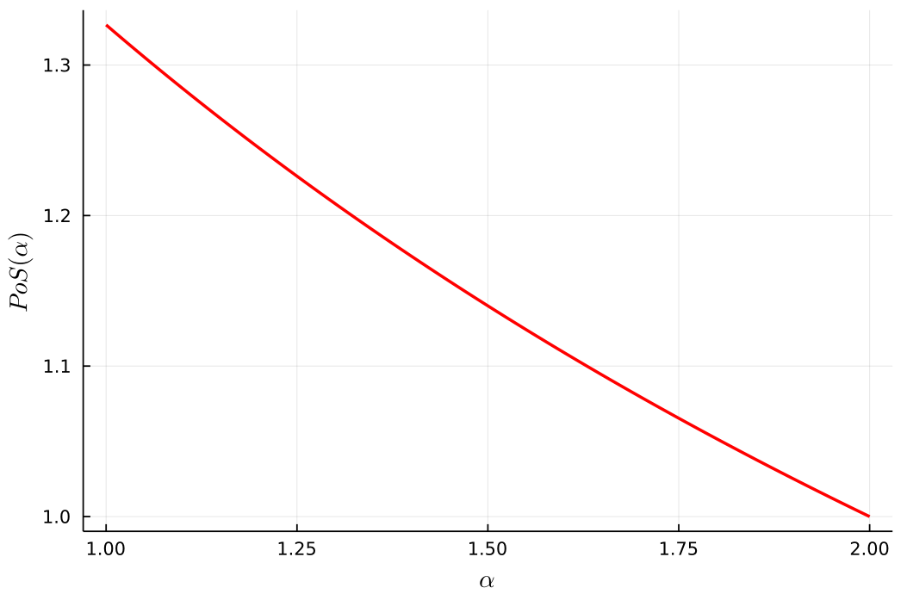
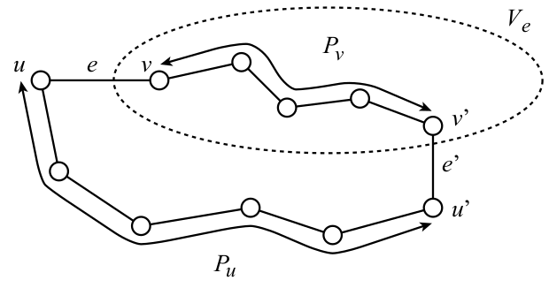
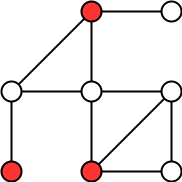
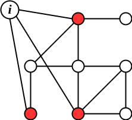

ADRC - Lesson 21
Indice
Local Connection Game
I Local Connection Games sono un'altra tipologia di giochi per il task del Network Formation. Consideriamo un gioco con \(n\) players, dove ogni player è rappresentato da un nodo della rete. Ogni nodo \(u\) può decidere di costruire degli archi ( non diretti ) verso un qualsiasi altro sottoinsieme di nodi. I giocatori hanno due obbiettivi competitivi:
- construire, e quindi pagare, il minor numero possibile di archi.
- ottenere una rete che minimizzi la distanza verso ogni altro nodo.
Ovviamente i due obbiettivi si controbilanciano, ovvero pagare la costruzione di troppi pochi archi comporta in automatico l'aumento delle distanze, e viceversa avere distanze complessivamente brevi comporta un costo di costruzione troppo alto.
Data una configurazione di strategie \(S\), indichiamo con \(G(S)\) la rete risultante.
Uniform Model
Considereremo solamente un modello uniforme, ovvero dove il costo di costruzione degli archi è una certa costante \(\alpha\) uguale per tutti.
Data una coppia di nod i \(u,v\), indichiamo con \(dist_{G(S)}(u,v)\) la lunghezza del cammino minimo (in termine di numero di archi) tra i nodi
\(u,v\) del grafo \(G(S)\) risultante dal profilo di strategie \(S\).
Indichiamo poi con \(n_u\) il numero di archi "comprati" dal nodo \(u\).
Il costo della strategie \(S\) che un nodo \(u\) pagherà è \[ COST_u(S) = \alpha n_u + \sum_v dist_{G(S)}(u,v) \] il quale ovviamente si desidera minimizzare.
Possiamo vedere il costo dei player come la somma di un building cost (costo di costruzione) e di un usage cost (costo d'uso, ovvero le distanze tra i nodi).
Osservare che in quanto il grafo \(G(S)\) è non diretto, quando un nodo \(u\) compra un arco \((u,v)\) esso sarà disponibile anche per il nodo \(v\).
Perciò in un Equilibrio di Nash NE al più uno tra \(u\) e \(v\) comprerà l'arco \((u,v)\).
Infatti se \((u,v)\) è comprato da entrambi gli estremi, uno dei due può tranquillamente abbandonare quell'arco migliorando il proprio building cost.
Inoltre dato che \(dist_{G(S)}(u,v)\) è infitia se \(u\) e \(v\) non sono connessi, allora ogni equilibrio deve necessariamente indurre un grafo connesso.
Considereremo quindi i NE come soluzioni del task.
Dato quindi un equilibrio \(S\), definiamo il suo costo sociale come la somma di tutti i costi dei nodi.
\[
COST(S) = \alpha \vert E \vert + \sum_{u \neq v} dist_{G(S)}(u,v)
\]
Osservare che la quantità \(dist_{G(S)}(u,v)\) contribuisce due volte al costo totale, una volta per \(u\) ed una per \(v\).
Una soluzioni \(S\) è ottima se minimizza il costo sociale \(COST(S)\).
[FARE ALCUNI ESEMPI…]
Stima dell'Ottimo
Prima di dare delle stime per PoA e PoS è necessario individuare qual è il costo di una soluzione ottima al problema.
Lemma 1 If \(\alpha \geq 2\) then any star is an optimal solution, and if \(\alpha \leq 2\) then the complete graph is an optimal solution.
Proof: Consideriamo una soluzione ottima \(G(S)\) con \(m\) archi. Sappiamo che \(m \geq n − 1\), altrimenti il grafo sarebbe disconnesso e quindi avrebbe un costo infinito.
Sappiamo con certezza che il building cost totale è \(\alpha m\). Per ogni arco \((u,v)\) c'è esattamente 1 coppia di nodi a distanza 1 (appunto \(u\) e \(v\)) che contribuirà di un fattore 2 all costo sociale, una volta per \(dist_{G(S)}(u,v)\) e una volta per \(dist_{G(S)}(v,u)\).
Dopodiché, dato che le coppie ordinate di nodi sono \(n(n-1)\), vuol dire che sono rimaste \(n(n-1) - 2m\) coppie di nodi non direttamente connessi da un arco, ovvero a distanza almeno 2. Perciò un lowerbound al costo sociale della soluzione \(S\) è \[ COST(S) \geq \alpha m + 2 m + 2(n(n-1) - 2m) = (\alpha - 2)m + 2n(n-1) = LB(m) \]
Osservare che il precedente lowerbound \(LB(m)\) è pari al costo sociale di una clique \(K_n\) quando \(m=n(n-1)/2\), e pari al costo sociale di una stella quando \(m = n - 1\).
Infatti, in una clique \(K_n\) tutti i nodi sono a distanza 1, perciò l'usage cost globale è \(n(n-1)\), mentre il building cost è \(\alpha \frac{n(n-1)}{2}\). Perciò il costo sociale di \(K_n\) è proprio pari al lowerbound \(LB(n(n-1)/2)\), ovvero
\begin{align*} COST(K_n) &= \alpha \frac{n(n-1)}{2} + n(n-1)\\ &= \alpha \frac{n(n-1)}{2} + (2-1)n(n-1)\\ &= \alpha \frac{n(n-1)}{2} + 2n(n-1) - n(n-1)\\ &= \alpha \frac{n(n-1)}{2} + 2n(n-1) - \left(\frac{2}{2}\right)n(n-1)\\ &= (\alpha - 2)\frac{n(n-1)}{2} + 2n(n-1) = LB\left(\frac{n(n-1)}{2}\right) \end{align*}
Invece nel caso di una stella con \(m = n-1\) archi avremo un usage cost di \(2(n-1)(n-2)\) per tutte gli \(n-1\) nodi a distanza 2, più \(2(n-1)\) per le coppie a distanza 1, per un totale di \(2(n-1)(n-2) + 2(n-1) = 2(n-1)(n-1)\). Il building cost globale è invece pari a \(\alpha(n-1)\). Perciò il costo sociale per una stella è
\begin{align*} COST(STAR_n) &= \alpha(n-1) + 2(n-1)(n-1)\\ &= \alpha(n-1) + 2n(n-1) - 2(n-1)\\ &= (\alpha - 2)(n-1) + 2n(n-1) = LB(n-1) \end{align*}
A questo punto ci si può chiedere per quali valori di \(\alpha\) il costo sociale di \(K_n\) è migliore (o viceversa peggiore) di quello di \(STAR_n\)
\begin{align*} COST(K_n) \leq COST(STAR_n) &\iff LB(K_n) \leq COST(STAR_n)\\ \\ \implies (\alpha - 2)\frac{n(n-1)}{2} + 2n(n-1) &\leq (\alpha - 2)(n-1) + 2n(n-1)\\ \\ (\alpha - 2)\frac{n(n-1)}{2} &\leq (\alpha - 2)(n-1)\\ \\ (\alpha - 2)\underbrace{ \left( \frac{n(n-1)}{2} - (n-1) \right) }_{> 0} &\leq 0\\ \\ \alpha \leq 2 \end{align*}Vicversa, per \(\alpha \geq 2\) il costo sociale di una stella è quello ottimo \(\square\).
Abbiamo visto che per diversi valori di \(\alpha\) la clique \(K_n\) o la stella \(STAR_n\) hanno un costo sociale ottimo. Quello che ci si può chiedere è se tali grafi sono delle soluzioni effettive, ovvero se sono reti stabili.
Lemma 2 If \(\alpha \leq 1\) the complete graph is stable, while if \(\alpha \geq 1\) then any star is stable.
Proof: nel caso di \(\alpha \leq 1\), a nessun nodo \(v\) della clique conviene "risparimare" un arco. Infatti, togliendo un arco, il nodo \(v\) guadagna di al più una unità, però si allontana dall'altro estremo dell'arco rimosso di esattamente 1. Perciò, nel caso migliore (quando \(\alpha = 1\)), il guadagno complessivo che \(v\) ricava nel togliere un suo arco incidente è pari a 0. La situazione non migliora lo stesso se \(v\) decide di elimnare \(k > 1\) archi.
Nel caso di una stella invece non è possibile effettuare rimozioni di archi, in quanto causerebbe la disconnessione del grafo. Perciò un nodo \(v\) potrebbe al più comprare nuovi archi per cercare di migliorare la sua situazione. Se \(v\) decide di comprare \(k \geq 1\) nuovi archi, pagherà una quantità aggiuntiva di \(\alpha k\), risparmiando esattamente \(k\) nell'usage cost. Per \(\alpha \geq 1\) tale strategia non migliora il costo del nodo \(v\) \(\square\).
PoS: Price of Stability
A questo punto è possibile quantificare il valore del prezzo della stabilità PoS.
THM
For \(\alpha \leq 1\) and \(\alpha \geq 2\) thePoSis 1. For \(1 < \alpha < 2\) thePoSis at most \(4/3\).
Proof: per \(\alpha \leq 1\) sappiamo che la soluzione socialmente ottima è la clique \(K_n\) e sappiamo anche che è una rete stabile, perciò
PoS= 1. Stessa cosa oer \(\alpha \geq 2\), la stella è la soluzione socialmente ottima ed è pure una rete stabile.
Invece per \(1 < \alpha < 2\) sappiamo che \(K_n\) è una soluzione ottima e che ogni stella (che indichiamo per brevità \(T\)) è stabile. Perciò
\begin{align*} PoS &\leq \frac{COST(T)}{COST(K_n)}\\ &= \frac{ (\alpha - 2)(n-1) + 2n(n-1) }{ \alpha\frac{n(n-1)}{2} + n(n-1) }\\ \textbf{( * )} &\leq \frac{ -1(n-1) + 2n(n-1) }{ \frac{n(n-1)}{2} + n(n-1) }\\ &= \frac{2n - 1}{\frac{3}{2}n} = \frac{4n - 2}{3n} \leq \frac{4}{3} \end{align*}
Figura 1: rapporto tra \(COST(T)\) e \(COST(K_n)\) in funzione di \(\alpha\).
La disuguaglianza ( * ) è giustificata dal fatto che tale rapporto è massimo per \(\alpha = 1\), come evince in figura \(\square\).
PoA: Price of Anarchy
Per \(\alpha \leq 1\) l'unica rete stabile è il grafo completo (da dimostrare…), perciò costo sociale ottimo e il costo della peggiore rete stabile coincidono, PoA = 1.
Per valori di \(\alpha > 1\) è più complicato dare una stima di PoA.
THM
ThePoAis at most \(O(\sqrt{\alpha})\).
La dimostrazione di questo teorema è una diretta conseguenza dei seguenti due lemmi.
Lemma 3 The diameter of a Nash Equilibrium is at most \(2\sqrt{\alpha}\).
Proof: Supponiamo di avere due nodi \(u,v\) a distanza \(dist(u,v) \geq 2k\), per qualche \(k > 0\). Osserviamo che succede se \(u\) compra l'arco \((u,v)\). Certamente il building cost di \(u\) aumenta di \(\alpha\), mentre la distanza con la seconda metà dei nodi del cammino minimo \(u \leadsto v\) diminuisce.
Più precisamente, la distanza \(dist(u,v)\) passa da al più \(2k\) ad 1. La distanza da \(u\) al penultimo nodo del cammino passa da al più \(2k-1\) a 2. Col precedente al penultimo passa da al più \(2k-2\) a 3, e così via… fiano al \(k-1\) esimo nodo più distante da \(v\). Perciò l'usage cost di \(u\) diminuisce al più della quantità \[ \sum_{i=0}^{k-1} (2i-1) = k^2 \]
In una rete stabile non deve convenire ad \(u\) comprare l'arco \((u,v)\), e ciò accade se e solo se \(\alpha \geq k^2\) \(\implies\) \(k \leq \sqrt{\alpha}\). Perciò una rete è stabile se \[ dist(u,v) \leq 2k \leq 2\sqrt{\alpha} \;\;\; \square \]
Lemma 4 If a graph \(G\) at Nash Equilibrium has diameter \(d\), then its social cost is at most \(O(d)\) times the optimum social cost.
Proof Dal Lemma 1 sappiamo che il social cost ottimo (che d'ora in poi indicheremo con \(OPT\)) è almeno \(\Omega(\alpha n + n^2) \subseteq \Omega(n^2)\) (perché \(\alpha\) è una costante). Infatti dato che una soluzione è certamente una rete connessa dobbiamo pagare almeno un building cost di \(\alpha(n-1)\), e dato che ci sono circa \(n^2\) coppie di nodi le quali distanze saranno almeno 1, giustificando l'usage cost di \(\Omega(n^2)\).
Dato che per ipotesi del teorema \(G\) ha diametro \(d\), allora l'usage cost sociale è \(O(n^2d)\), ovvero \(d\) volte \(OPT\).
Più articolata è l'analisi del building cost \(\alpha \vert E \vert\). Come prima cosa partizioniamo l'insieme di archi in cut edges \(E_{cut}\), ovvero tutti quegli archi che se rimossi disconnettono \(G\), e in non cut edges \(E_{non-cut}\), ovvero tutti gli archi restanti che non sono cut edges.
Osserviamo che i cut edges sono al più \(n-1\), perciò il building cost sarà al più \(\alpha(n-1)\). Dato che \(\alpha(n-1) \in O(\alpha n + n^2)\), avremo che il building cost di \(E_{cut}\) è al più \(OPT\).
Consideriamo ora \(E_{non-cut}\), dimostreremo che ogni vertice \(v\) pagherà \(O(nd/\alpha)\) di tali archi (non cut edges), perciò applicando tale costo per tutti gli \(n\) nodi avremo il building cost totale di \(E_{non-cut}\) è di \(O(n^2d/\alpha) \subseteq O(n^2d) \subseteq O(d \cdot OPT)\).
Consideriamo un nodo \(u\) avente almeno un non cut edge incidente \(e = (u,v) \in E_{non-cut}\). Indichimo con \(V_e\) l'insieme dei nodi \(w\), dove i shortest path \(u \leadsto w\) passano attraverso \(e\). Rimuovendo l'arco \(e\) il grafo residuo \(G'\) è ancora connesso (perché per ipotesi \(e\) è un non cut edge) perciò esisterà un altro cammino minimo \(P\) da \(u\) a \(v\). Tale cammino entrerà in \(V_e\) attraverso un arco \((u',v')\), per poi arrivare fino a \(v\). \(P\) sarà del tipo \((u, ..., u', v', ..., v)\). Per la proprietà di sottostruttra ottima1 dei cammini minimi avremo che \(dist(u,u') \leq d\) e \(dist(v',v) \leq d\), perciò rimuovendo \(e\) la distanza tra \(u\) e \(v\) sarà al più \(dist_{G'}(u,v) \leq 2d\).

Dato che in \(V_e\) il nodo \(v\) è il più vicino ad \(u\), rimuovendo \(e\) le distanze da \(u\) di tutti i nodi \(w \in V_e\) diventeranno al più \(dist_{G'}(u,w) \leq dist_{G'}(u,v) \leq 2d\). Quindi rimuovendo \(e\), l'usage cost di \(u\) aumenterà di al più \(2d \vert V_e \vert\).
Perciò a un qualsiasi nodo \(u\) conviene rimuovere un suo arco \(e \in E_{non-cut}\) se e solo se \(\alpha \leq 2d \vert V_e \vert\), ovvero se \(\vert V_e \vert \geq \frac{\alpha}{2d}\). Dato che in ogni \(V_e\) ci sono almeno \(\frac{\alpha}{2d}\) nodi, allora ci sono al più \(\frac{n}{\alpha/2d} = \frac{n2d}{\alpha}\) insiemi di quel tipo. Quindi per ogni nodo \(u\) ci sono al più \(n\frac{2d}{\alpha}\) non cut edges, quindi \(\vert E_{non-cut} \vert \leq n^2\frac{2d}{\alpha}\).
In conclusione avremo che il social cost di un grafo \(G\) di diametro \(d\) è
\begin{align*} COST(G) &= ( \sum_{u,v} dist_{G}(u,v) ) + \alpha \vert E \vert\\ &= O(d n^2) + \alpha \vert E_{cut} \vert + \alpha \vert E_{non-cut} \vert\\ &\leq O(d) \cdot OPT + \alpha (n-1) + \alpha O(n^2d/\alpha)\\ &\leq O(d) \cdot OPT + OPT + O(d) \cdot OPT = O(d) \cdot OPT \;\;\; \square \end{align*}
Ricapitolando, abbiamo detto che il diametro \(d\) di una rete stabile è al più \(2\sqrt{\alpha}\), e che il suo social cost è al più \(O(d) \cdot OPT\).
Perciò il prezzo dell'anarchia di una rete stabile \(G\) è
\[
\texttt{PoA} = \max_{G \in NEs}{\frac{COST(G)}{OPT}} \leq \frac{ O(\sqrt{\alpha}) \cdot OPT }{ OPT } = O(\sqrt{\alpha})
\]
come affermato nel teorema iniziale.
Complessità
Generalmente dare queste stime al prezzo dell'anarchia e della stabilità può sembrare incoraggiante, perché ci fa ben sperare di trovare una buana soluzione a problema del Network Formation. Purtroppo però bisogna anche considerare quanto può essere complicato per un player individuare qual è la strategia migliore da adottare.
THM It is NP-hard, given the strategies of the other agents, to compute the best response of a given player.
Proof: verrà mostrata una riduzione polinomiale dal problema NP-completo Dominating Set Problem (
DSP). \[ \texttt{DSP} \preccurlyeq_P \texttt{LCG} \]Un'istanza di
DSPè un grafo \(G=(V,E)\), e si vuole trovare un sottoinsieme di nodi \(U \subseteq V\) tale che \(\forall v \in V \setminus U\) esiste almeno un \(u \in U\) vicino di \(v\), ovvero \((u,v) \in E\). In tal caso si dice che \(U\) è un insieme dominante. Il problema decisionale NP-completo riguardo gli insiemi dominanti è stabilire se, dato un \(k \geq 1\), esiste un dominating se grande al più \(k\).

Figura 3: In rosso un dominating set.
Consideriamo volri di \(\alpha\) compresi tra 1 e 2. Per ogni player \(i\) aggiungiamo un nuovo al grafo. A questo punto il player \(i\) dovrà scegliere quali archi costruire per ottenere un guadagno ottimo (per se stesso). È possibile dimostrare che il player \(i\) ha una strategia better response \(S_i\) di costo al più \(\leq \alpha k + 2n -k\) se e soltanto se esiste in \(G(V,E) = G(S_{-i})\) un dominating set di dimensione al più \(\leq k\).
Dato un dominating set grande al più \(k\) è facile ricavare una strategia better response \(S_i\) col costo desidera. Basterà infatti che \(i\) compri un arco verso ognuno dei nodi nel dominating set.

Figura 4: Dato il dominating set precedente, il player \(i\) può immediatamente definire una strategia \(S_i\) better response.
- \(\Longleftarrow\)
- Analiziamo il costo di \(COST_i(S_i)\). Sicuramente il building cost stara al più \(\alpha k\). Per quanto riguarda l'usage cost, pagherà 1 per tutti i nodi nel nel dominating set, e 2 per i restanti \(n-k\) nodi. Perciò l'usage cost sarà al più \(2(n-k) + k = 2n - k\). In conclusione, se in \(G\) esiste un dominating set di dimensione \(k\), \(i\) riesce a trovare immediatamente una strategia better response di costo al più \(\alpha k + 2n - k\).
- \(\Longrightarrow\)
- Sia \(S_i\) una strategia di costo al più \(k\). Se in \(G\) esiste un nodo \(v\) a distanti più di 2 da \(i\), aggiungere ad \(S_i\) l'arco \((i,v)\). Osservare che il building cost di \(S_i\) aumenta di \(\alpha < 2\), per l'usage cost risparmia un fattore di almeno 2, perché stiamo avvicinando \(v\) che era a distanza \(\geq 3\) a distanza 1. Ripetiamo questo passaggio finché tutti nodi non saranno a distanza 1 o 2 da \(i\). Creiamo ora il dominating set \(U\) semplicemente inserendo tutti i nodi che sono distanti 1 da \(i\). È facile convincersi che \(U\) sia un dominating set, perché tutti gli altri nodi sono distanti 2 da \(i\), e quindi hanno almeno un vicino in \(U\). Infine basta osservare che la nuova strategia \(S_i\) ha costo esattamente \(\alpha \vert U \vert + 2n - \vert U \vert \leq \alpha k + 2n - k\), ovvero \(\vert U \vert \leq k\) \(\square\).
Note a piè di pagina:
ogni sottocammino minimo di un cammino minimo è un cammino minimo.